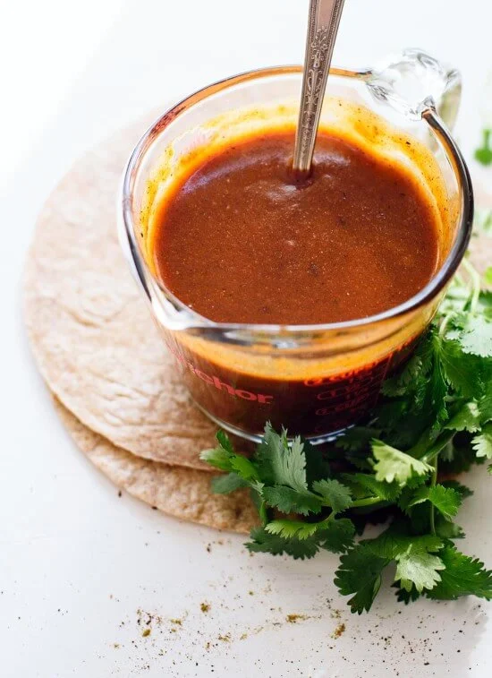

Homemade Enchilada Sauce

You probably shouldn't drink it, but I'm tempted every time.
This enchilada sauce is the most correct topping for
enchiladas. Yes, there are sauces available in the grocery
store, but they are sauce knock-offs and will surely have a
negative impact on your enchilada enjoyment.
Making this sauce gets easier every time, but you could also
make a big batch and save it for your next enchilada night for
the path of least resistance to delicious enchiladas.
~Let's Get Cooking~
You will need:
- 3 tablespoons olive oil
- 3 tablespoons flour
- 1 tablespoons chili powder (or more
if you love eating fire)
- 1 teaspoon cumin
- 1/2 teaspoon garlic powder
- 1/4 teaspoon dried oregano
- 1/4 teaspoon salt, to taste
- Pinch of cinnamon
- 2 tablespoons tomato paste
- 2 cups vegetable broth
- 1 teaspoon apple cider or distilled
white vinegar
- Black pepper, to taste
How to bring it all together:
- Measure dry ingredients into a small bowl and place
it near the stove. Place tomato paste and broth nearby
as well.
- Warm oil in a medium pot over medium heat till a
sprinkle of the flour mixture sizzles on contact.
- Once hot, pour in flour mixture. Whisk constantly.
Cook till fragrant and starting to turn golden, about
a minute. Whisk in tomato paste, then slowly pour in
broth while constantly whisking to prevent lumps.
- Raise heat to medium high and bring sauce to a simmer.
Cook, whisking often, for about 5 to 7 minutes. Sauce
should be thickened and a spoon should feel resistance
while stirring.
- Remove from heat, whisk in vinegar, and season with
black peppper to taste. Add salt if needed.